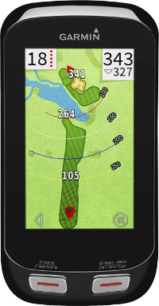

Garmin Approach G8 GPS Details
Garmin Approach G8 GPS Images
Garmin Approach G8 GPS
With a large colour 3in touchscreen loaded with over 40,000 courses from around the globe, the Garmin G8 is still the pocket caddy of choice. Not only does it include most of the courses your every likely to play, it also includes free updates which many other companies offer at a premium.
The G8 also works while wearing a glove, which means that you can set your target, manually place the pin, or enter your score into the digital scorecard while on the move. It also keeps track of how far you hit each club, providing you with all the tools you need to play your best